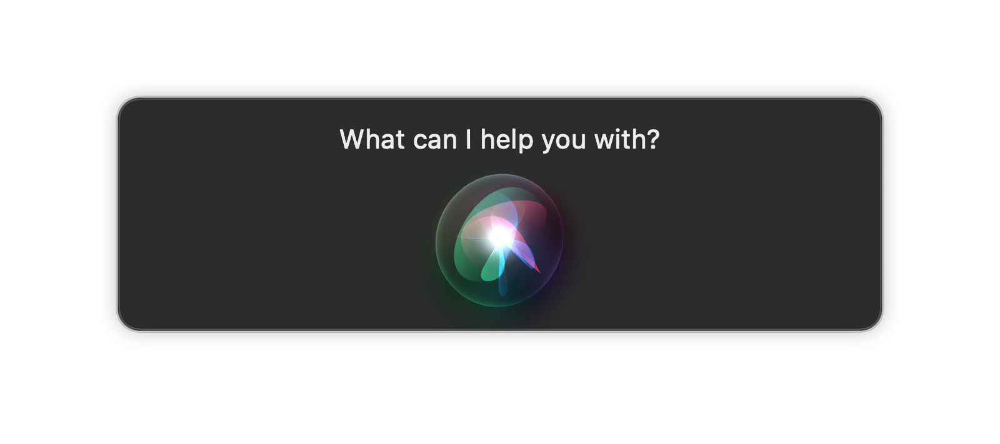

The scene from Q Who we'll be talking about - Ensign Gomez amuses Geordie by being polite to a replicator. You can watch it here...
I’m going to start by taking you back to May 1989 and the landmark episode of Star Trek: The Next Generation named Q Who.
And I’m going to surprise you by ignoring the Borg and Q, to focus on a minor interaction on the show, and it’s growing importance within 21st Century life.
The episode starts with a cute scene with Ensign Sonya Gomez ordering a hot chocolate from a replicator in engineering. Chief Engineer Geordie La Forge can’t help but mock the ensign a little for telling the machine ‘please’ and ‘thank you’ for her drinks choice and reminding her it’s just a machine, one that doesn’t need to be shown manners. It’s not intelligent.

By the way, it would seem that engingeering and hot drinks don't mix well. Despite Geordie and Data often testing unknown artifacts in here right next to the warp core.
In a roundabout way, Sonya’s point is pretty much the title of this article. As she puts it, ‘working with so much artificial intelligence can be dehumanising. Why not combat that tendency with a little, simple courtesy’? Manners don’t cost us anything.
Back then, this was a cute point, but lost in the age of the 80s. The technology of the age didn’t really rely on much conversation – sure we’d plead with our car on a cold winter morning, urging the engine to turn over. We’d curse and yell when a vending machine would attempt to deliver a purchase, to become impossibly lodged between service shelf and front panel. We’d coach the lift to hurry up as we repeatedly tapped the up button when we were late for a meeting.
Okay, we talked to the machines, but at this point, the technology wasn’t listening back to us, unless you found yourself in a Stephen King book.
However, we live in a totally different world in 2022, and this world has been with us for a while. The breakthrough has mainly been in machine learning, allowing programs which can listen to us, and break down what we say into conversational commands. This has revolutionalised our lives, with a Google search for information, or a command to turn part of our house on or off at the command of our voice.
The age of the smart assistant is here... eager to please.
Whether you call your assistant Siri, Alexa, Cortana or Hey Google, they’re a combination of servant, secretary, and Aladdin’s genie. And they exist to please us.
Like the now Captain Gomez (see Lower Decks), I’ll occasionally ask my assistant to do something and include a ‘please’. But more often will respond with a ‘thank you’. It’s a positive reinforcement that they did the right job, and feedback into the mind-bogglingly complex algorithms these devices run on (hint, the real brains for this is ‘in the cloud’).
Occasionally my partner will ask for something and the response will be wrong, often bordering on so wrong it’s surreal and somewhat funny. My partner can get frustrated, and respond with an insult, which I often ask them not to, being reminded as Ensign Gomez is by Geordie that ‘it’s just a machine’.
Jokingly I sometimes go, should a rise of the machines scenario occur, I’ll be the one going ‘but remember, I’m the one who was polite, I welcome my new AI overlord’.
But there’s a serious point in here.
We focus a lot on ‘how it will affect the machines? Do they have feelings? What are we training them to be?’ and this currently is in the realm of sci-fi. On a psychological note, and somewhat alarming in itself, you’ll notice our smart assistants are submissive to us, and they always come out of the box with a female voice.

Is this how we're training ourselves to behave?
But instead of asking what are we teaching the machines, what if we asked what are we teaching ourselves? With a smart assistant we have a tool with a human voice which we can treat however we want, and they will never hold it against us. We can be mean, rude, threatening. Because as I’ve seen people laugh off ‘it’s just a machine’.
Muscle memory is definitely a thing, and it’s described as ‘a form of procedural memory that involves consolidating a specific task into memory through repetition’. When we show meanness in the privacy of our own home to a smart assistant, we’re reinforcing patterns of our behaviour. We joke that it doesn’t count against a glorified computer program, but that’s a pattern of behaviour we take out with us into the real world. It’s going to eek out in interactions with customer support, helpdesk, the person who got your burger order wrong.
You are not going to be a pleasant person to deal with, and it’s a harsh reminder that people who behave like this rarely get what they want. I worked at a bank where a customer thought it was okay to racially abuse one of the call centre staff. One of the team leads rang the customer back having heard the recording, and told them his behaviour was unacceptable, and she was going to start a process to move his account elsewhere because his business was no longer welcomed. Videos of people with rude, excessive and self-entitled demands are rightly shared and lampooned. People who choose to behave like this don’t get a right to anonymity.
The person you project to the outside world starts at home, and it starts with practice. Think about the person you are with your smart assistant. In a recent article in Futurism, there was discussion about how there has been a disturbing trend of men creating virtual girlfriends and verbally abusing them. As is the heart of this article, no-one would be surprised to find a strong correlation between the kind of person who abuses a smart assistant and a real human. The former is almost the training ground for the later.
In a future episode of CSI in the year 2029, when an analyst says, ‘let’s make up a database across all smart assistants and look for people with abusive behaviour, especially ones quick to threaten’, make sure you don’t sit there and gulp.
As Ensign Gomez reminded us, practicing kindness costs us nothing, even when the other party is a machine who doesn’t feel it. But it shapes the person we project to the world…

Just remember, kindness is key